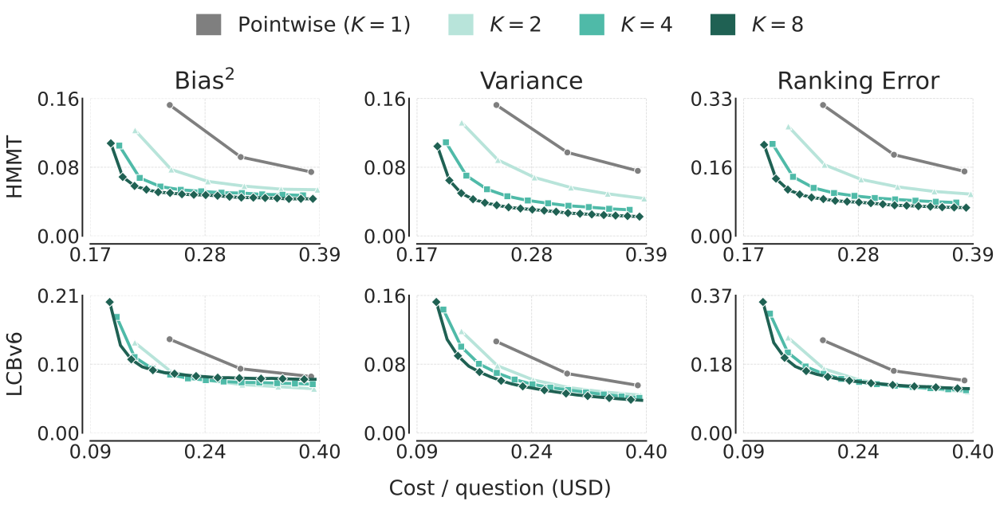
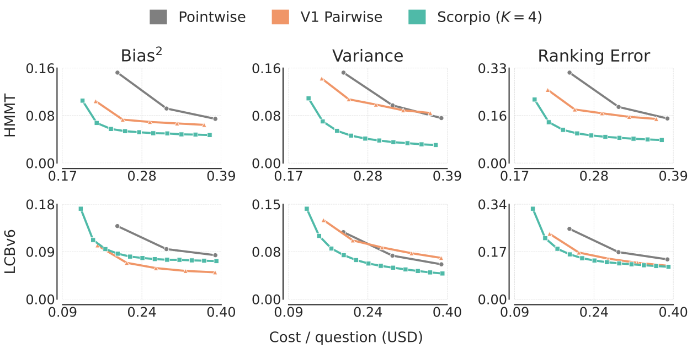
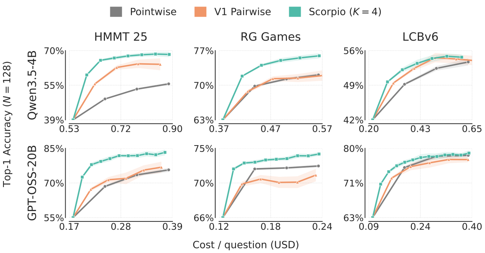
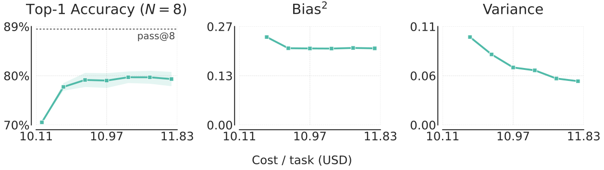
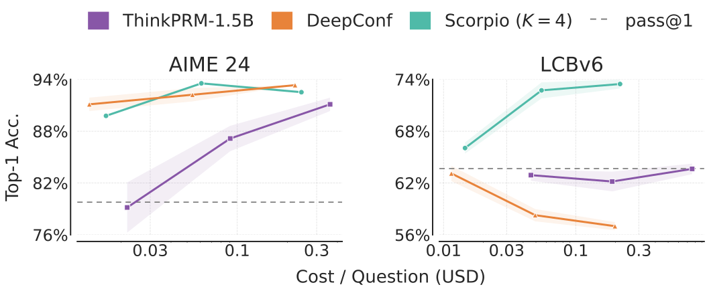
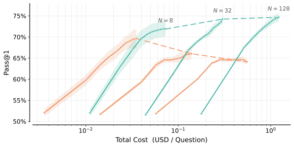

Sampling multiple solutions from a language model improves the chance of getting at least one correct solution, i.e., pass@N goes up with N. But how do we select the correct one? A common approach has been to spend test-time compute on self-verification, where the model is repeatedly asked to score its generations and then the highest-scoring solution is picked. While this improves the selection accuracy, the accuracy often plateaus well below pass@N.
In our recent work, On the Limits of Test-Time Compute for Self-Evaluation, we ask why models struggle to select their own correct solutions. We examine this question through the lens of bias and variance in the LLM's judgements, and find that as inference compute increases, the model's judgements become more consistent (variance decreases), but can still remain incorrect (bias remains). In this post, we go over how this perspective helps analyze and simplify design choices in recent test-time scaling methods, leading to our approach, Scorpio.
Note: This blog is a more informal presentation of the work. For more technical details we refer the reader to the paper on arXiv.
Generating more solutions helps, but selection struggles to keep up
Frontier models like GPT-6 Astra and Fable-5.1 are more likely to produce a correct solution when given multiple attempts. The figure below shows results on Terminal-Bench 4, where moving from one attempt to five increases success rates by ~13–21 percentage points. However, realizing these gains requires selecting a correct solution from the sampled candidates.
Below, we show how the selection accuracy of a recent self-verification method, V1 (Singh et al., 2026), changes as the number of sampled solutions increases. As the number of candidates grows, the gap between selection accuracy and pass@N widens.
Anatomy of a selection method
Before understanding why selection accuracy plateaus below pass@N, we describe how recent work on self-verification scales test-time compute.
Several works have proposed spending inference compute on self-verification to select from a pool of sampled solutions (Kwok et al., 2026; Kim et al., 2026; Singh et al., 2026). The figure below shows a pool containing both correct and incorrect solutions that different methods score in different ways. Candidates can be scored one at a time: the model sees the problem and a single solution, and assigns it a score based on correctness. Alternatively, candidates can be scored in pairs using tournament-style methods that pair candidates with similar scores (Singh et al., 2026).
This scoring is repeated over several rounds, with the ranking refined in each round. Once the final round is done, the highest-scoring candidate is chosen. In this work, we focus on two design choices of the scorer: (i) how many candidates the judge sees in each evaluation and (ii) how these candidates are grouped. Should they be grouped randomly, or should candidates with similar scores be placed together in a judge call?
Ranking error and its bias-variance decomposition
The goal of a scoring procedure is to rank correct candidates above incorrect ones. To measure how well a model ranks its own solutions, we count the number of times an incorrect candidate receives a higher score than a correct one. In the figure above, round 1 has three misrankings: #2 is ranked above both #3 and #1, and #4 is ranked above #1. By the last round, only one misranking remains.
Measuring ranking error as the fraction of misranked pairs, we show that this error decomposes into a bias term and a variance term (refer to Sec. 4 in the paper). Intuitively, the bias term captures pairs the model consistently misranks across repeated scoring, and the variance term measures how often the language model changes its judgements. When asked to score once, the LLM might rank #2 above #1, but when asked again, it might prefer #1. Notice that both bias and variance are functions of inference compute. We next examine how each term changes as a function of inference compute.
Note: Ranking error penalizes mistakes throughout the ranking, while verification only requires the top-ranked candidate to be correct. As we discuss later, the trends we observe in ranking error also hold for top-1 accuracy. Moreover, other test-time scaling algorithms depend on more than the top-ranked candidate. In search and aggregation, errors can compound: pruning a promising partial solution or retaining a poor candidate for aggregation affects subsequent generations.
What does the bias-variance decomposition enable?
We now discuss how design decisions, such as the number of candidates included in the context and how they are grouped, affect ranking error and its associated bias and variance terms. Across all of these choices, one pattern holds: variance keeps decreasing with compute, while bias plateaus.
How many candidates should go in the context?
We vary the number of candidates scored together, $K \in \{1,2,4,8\}$. Given $N=128$ candidates, they are randomly split into $N/K$ groups, and the candidates within each group are scored jointly. The scoring procedure is repeated over several rounds, with new random groups formed in each round. Finally, each candidate’s score is obtained by averaging its scores across rounds. This procedure is our method, which we call Scoring Candidates Over Random PartItiOns (Scorpio).

Variance reduces with compute, but ranking bias plateaus. From the above figure, we see that variance decreases as inference compute increases, while bias decreases initially before approaching a plateau. In other words, at high inference compute, rankings become more stable (variance approaches zero), but there exist incorrect solutions that receive higher scores than correct ones. This irreducible bias keeps selection methods from closing the gap to pass@N.
Joint evaluation reduces ranking error. Similar to Singh et al. (2026) and Kwok et al. (2026), we find that evaluating candidates together improves ranking quality over evaluating them in isolation (pointwise, $K=1$). Pointwise scoring has higher bias than joint evaluation, suggesting that comparison among multiple candidates helps the model distinguish correct solutions from incorrect ones.
Larger groups reduce variance, but can increase bias. Having multiple candidates in the context also reduces variance faster because fewer calls ($N/K$) are needed per scoring round, allowing each candidate's score to be averaged over more evaluations within the same cost budget. However, these variance reductions can come at the expense of bias: on LCBv6, increasing the group size to $K=8$ raises bias, potentially because comparing more candidates in a single context is harder. We therefore use $K=4$ as the default to balance these effects.
How should candidates be grouped?
In the procedure above, we form groups randomly. However, recent algorithms have also proposed tournament strategies for building groups. We therefore compare Scorpio's scoring with V1's (Singh et al., 2026) tournament-based pairing and pointwise scoring.

Random grouping reduces variance faster, while tournament pairing can lower bias. From the figure above, we see that Scorpio achieves similar or lower ranking error (right) compared to V1 and pointwise scoring. However, its bias-variance decomposition differs from that of V1, which pairs similarly scoring candidates with each other. V1 consistently shows higher variance than Scorpio, likely because these comparisons are harder than the random comparisons that Scorpio makes. However, V1's strategy can help lower bias, as seen on LCBv6, where it attains lower bias than Scorpio.
Tying back to top-1 accuracy
Until now, we have seen that Scorpio can achieve similar or lower ranking error on a few datasets. However, as highlighted above, ranking error penalizes mistakes throughout the ranking, while verification only requires the top-ranked candidate to be correct. To ensure that the benefits in ranking error translate to top-1 accuracy, we compare Scorpio, V1, and pointwise scoring across two models and three datasets below, and see that Scorpio scales better than the baselines while being arguably simpler.

Irreducible bias does not go away with scale
To examine whether these limitations persist in a more capable model, we evaluate Gemini-3.1-Pro on Terminal-Bench-2.1. We generate $N = 8$ responses per task and use Scorpio to select the best one. As seen from the figure below, Scorpio's selection accuracy plateaus $9$ percentage points below pass@8 (left). Similar to the experiments above, variance reduces with compute, but ranking bias plateaus (middle and right). This irreducible bias accounts for the gap between Scorpio's selection accuracy and pass@8.

Scorpio extends to other test-time scaling algorithms
So far, we have seen how Scorpio can improve the selection of the correct solution from a pool of candidate solutions. In the sections below, we show how Scorpio can improve the scaling of tree search and aggregation-based methods.
Tree search
To scale test-time compute in tree search, we follow a setup similar to DeepConf (Fu et al., 2025), where partial trajectories are evaluated to prune unpromising paths. Every 2K tokens, the generating model itself scores groups of partial trajectories with Scorpio and prunes the lowest-scoring ones. We compare against DeepConf, which estimates the value of a partial solution from the model's token probabilities, and ThinkPRM (Khalifa et al., 2025), a generative process reward model trained on verification trajectories generated by a larger model. Overall, Scorpio scales similarly to or better than both approaches, without any training or external model.

Aggregation
We now show how selecting which candidates to aggregate from can significantly improve the scaling of aggregation-based methods. We consider Recursive Self-Aggregation (RSA; Venkatraman et al., 2025) and add a selection step between successive rounds, so that aggregation sets are built only from the top-scoring candidates. Following Singh et al. (2026), we use Scorpio to select the top $N/2$ candidates and build the $N$ aggregation sets from them. As the figure below shows, selection fixes RSA's negative scaling trend: without selection, RSA's accuracy decreases as $N$ increases. For a discussion of why this happens, see Sec. 5.3 of the paper!

Limitations
Despite Scorpio's improved test-time scaling, it does not eliminate bias in rankings, so a significant gap remains between its selection accuracy and the oracle accuracy, pass@N. Addressing this residual bias remains an important direction for realizing the full benefit of sampling multiple candidates.
Conclusion
In this work, we introduced a bias-variance decomposition to analyze how well LLMs evaluate their own solutions. We found that increasing test-time compute reduces variance, while irreducible ranking bias limits further improvements in selection accuracy. Using this decomposition, we identified strengths and weaknesses of test-time scaling algorithms and introduced Scorpio, a simple strategy that jointly scores candidates over random partitions. This strategy is effective across multiple test-time scaling settings, models, and benchmarks. We hope the decomposition encourages future test-time scaling methods to report and improve ranking error by reducing bias, variance, or both. A preliminary experiment in Appendix C.5 of our paper points to one such direction: replacing self-evaluation with evaluation from another model can reduce ranking bias.
Acknowledgements
A big thanks to all my coauthors, without whom this effort wouldn't have been possible: Khaled, Sujin, Johan, Morgane, Samuel, Michael, Laurent, and Aaron! The format of this blog was heavily inspired by Michael Noukhovitch's blog post, Learning to Solve Hard Problems in RL for LLMs by Never Giving Up.
All interactive graphs and animations were made by Opus 5.5, and the writing was polished by GPT-6-Astra.
Citation
@misc{buvanesh2026scorpio,
title = {On the Limits of Test-Time Compute for Self-Evaluation},
url = {https://arxiv.org/abs/2611.00350},
author = {Buvanesh, Anirudh and Rouissi, Khaled and Yun, Sujin and Obando-Ceron, Johan and Moss, Morgane M and Lavoie, Samuel and Noukhovitch, Michael and Charlin, Laurent and Courville, Aaron},
month = nov,
year = {2026},
}